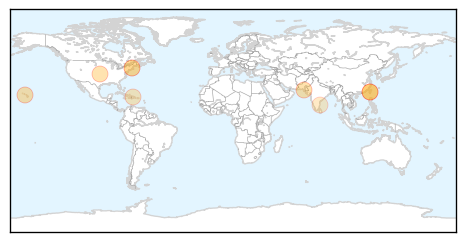
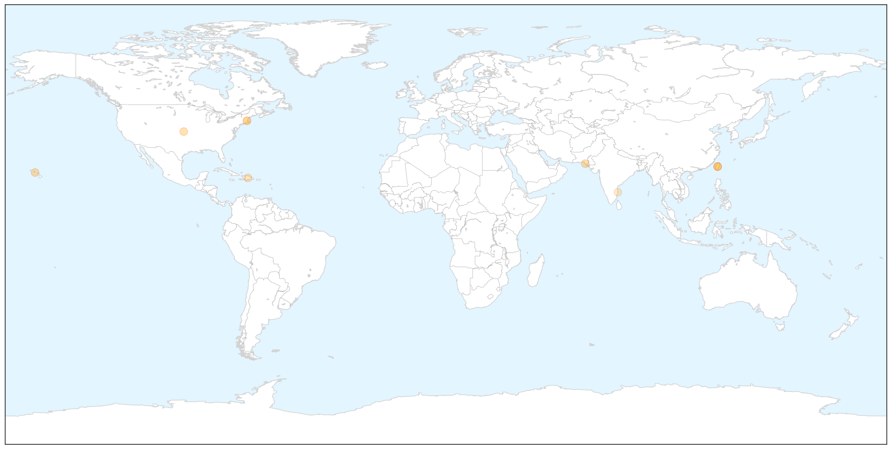
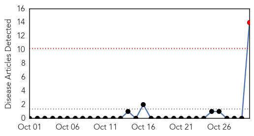
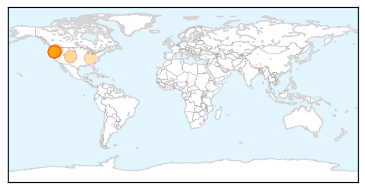
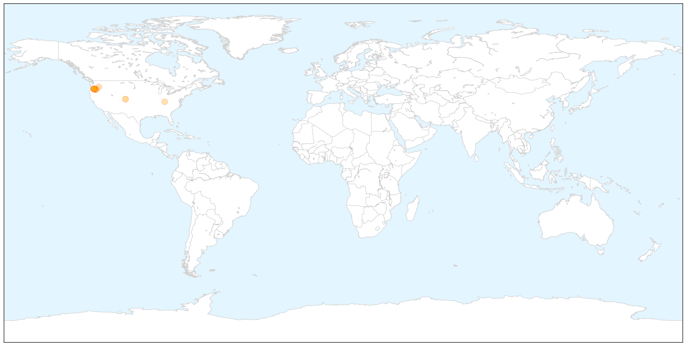
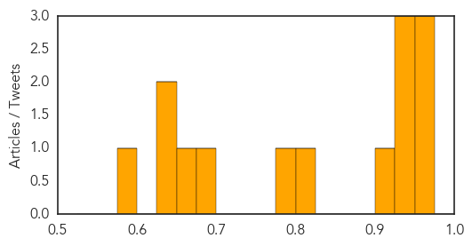

Dengue Fever
30-Day Web Trend
0 alerts, 0 warnings

30-Day Twitter Trend
7 alerts, 0 warnings

Article Locations

X

Article Confidences

Top Articles:
- 0.989
- Halloween celebrations continue in Taiwan despite looming health threat
- 0.985
- Halloween celebrations continue in Taiwan despite looming health threat
- 0.977
- DOH confirms 2 cases of locally-acquired dengue fever; investiga
- 0.965
- JPMC paramedic dies of dengue fever
- 0.930
- What's The Scariest Halloween Costume Of Them All?
- 0.792
- Government starts fight on dengue as 97 die nationwide
- 0.739
- Twitter, EHR Big Data Help Track Flu with Predictive Analytics
- 0.721
- Nowcasting—and Forecasting—Flu
- 0.673
- Actor Vivekh's Son Dies of Suspected Dengue After a Month
Top Tweets:
-
No tweets found for Oct 30, 2015
Bubonic Plague
30-Day Web Trend
1 alerts, 0 warnings

30-Day Twitter Trend
0 alerts, 0 warnings

Article Locations

X

Article Confidences
Top Articles:
- 0.974
- Crook County teen infected with bubonic plague; Disease probably came from flea bite during hunting trip in Morrow County
- 0.965
- Crook County teen contracts bubonic plague
- 0.962
- Bubonic plague confirmed in Crook County teen after hunting trip near Heppner
- 0.949
- Teenage girl diagnosed with bubonic plague in Oregon — RT USA
- 0.943
- Sweet News, Bros! The Bubonic Plague Is Back, And It's Already In America
- 0.938
- Teenage girl in Oregon hospitalized with bubonic plague
- 0.918
- Teenage girl in Oregon hospitalized with bubonic plague
- 0.823
- Oregon Teen Has Bubonic Plague, State Officials Say
- 0.797
- Oregon Teen Contracts Bubonic Plague After Hunting Trip
- 0.685
- Oregon teenager becomes nation's 16th plague case
- 0.664
- Rare bubonic plague infects teen in Oregon
- 0.637
- Here's What You Need to Know
- 0.625
- What Is The Bubonic Plague? Oregon Teen Diagnosed With Infectious Bacterial Disease
- 0.590
- Teenage Girl Contracts Bubonic Plague while Hunting in Oregon
Top Tweets:
-
No tweets found for Oct 30, 2015